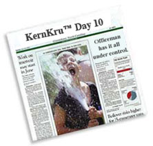
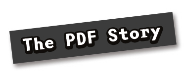

|

For the people just tuning in: This is the site of a workshop that is being held in Lahti, Finland right now about automation. In the previous week, students were asked to design a font with the theme of "automation". This week, we're asking the students to create a book about the same subject. It should count at least 724 pages (one more than the FontLab manual). The content, off course, should be about automation too. And before you think we're utter sadists for asking this, you probably have to learn about DrawBot, an environment for creating automated design.
Today it's wednesday, it's minus 16 outside (well, here they don't say the minus, so it's just "16") and students are discovering that while they have DrawBot to create endless amounts of pages, they still have to decide on the content!
|

KernKru discovers the outer limits of Adobe packages! Read the full story above, or click the PDF to try it yourself. Warning: extreme vectors!
|
|